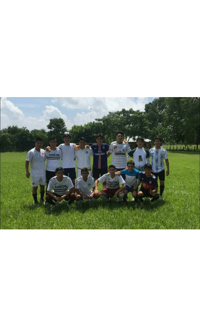

¿COMO SOY?
Soy un buen chavo, me gusta ser muy sociable con las demas personas, soy muy sentimental,
soy muy comprensivo, me gusta ayudar a la gente y darle buenos consejos, soy honesto,
siempre me ha gustado escribir poemas en mis tiempos libres o jugar futbol,
me gusta mucho leer, creo que soy una persona muy interesante.
Valores con los que me identifico como persona.
El respeto:
Es una de las principales ya que soy muy respetuoso con todas las personas
y mas con mis mayores de edad ya que no debemos ofenderlos.
Amor:
el amor es uno de los valores mas importantes de la sociedad ya que nos hace ver la felicidad de otra persona
en el nos agradamos y esforzamos por querer a los individuos que estan a mi al rededor.
tolerancia:
yo soy muy tolerante con las demas personas en todos los aspectos, ser tolerante es bueno pero no en exceso
nos acostumbramos a los estilos de vida de otras personas.
La niña que me gusta:

Mis Gustos
jugar futbol:
Uno de mis gustos favoritos es jugar futbol ya que desde pequeño he jugado mucho y he sido de los mejorees de mi generacion
me ayuda a olvidar mis problemas y es bonito poder jugar con tus amigos y poder divertime.
Color favorito:
Uno de mis colores favoritos es el azul, rojo al igual que el negro
Pasatiempo:
Mi pasatiempos favorito es jugar futbol, ver peliculas y escribir
